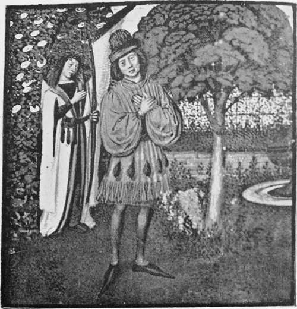

Fourteenth And Fifteenth Centuries. Part 4
Description
This section is from the book "A History Of Gardening In England", by Alicia Amherst. Also available from Amazon: A History Of Gardening In England.
Fourteenth And Fifteenth Centuries. Part 4
Within the enclosure all was trim and neat. All round against the wall a bank of earth was thrown up, the front of which was faced with brick or stone, and the mould planted with sweet-smelling herbs. At intervals there were recesses with seats or benches covered with turf, " theck yset and soft as any velvet." Low mounds of earth were also made here and there, in the garden, " on which one might sit and rest," and these "benches" were also "turved with newe turves grene." The little paths throughout the garden were covered with sand or gravel, and kept free from weeds. Lydgate mentions a garden, in which " all the alleys were made playne with sand."*
No garden was considered complete without its arbour, its "privy playing place." They were either set in a nook in the wall, or in a part of the garden sheltered by a thick hedge. The arbour, or "herber," was made of trees thickly intertwined with climbing plants, to screen them from the eyes of the intruder.. One is thus described in The Flower and the Leaf:—
" And at the last a path of little brede I found, that greatly had not used be, For it forgrowen was with grasse and weede, That well-unneth † a wighte might it se :
Thought I, this path some whidar goth, parde,
And so I followed, till it me brought.
To right a pleasaunt herber well y wrought".
That benched was and with turfes new.
Freshly turved, whereof the grene gras,
So small, so thicke, so short, so fresh of hew,
That most like unto green wool wot I it was : The hegge also that yede in compas ‡ And closed in all the greene herbere With sicamour § was set and eglatere.
And shapen was this herber roofe and all.
As a pretty parlour : and also.
The hegge as thicke as a castle wall,
* The CJiorle and the Bird. ‡ = went round it.
† = scarcely, hardly. § = honeysuckle.
That who that list without to stond or go.
Though he would all day prien to and fro.
He should not sec if there were any wight within or no".
We see this same idea of seclusion, as the essential feature of an arbour, in the fifteenth-century poem, " La Belle Dame Sans Merci."*
ARBOUR, FROM THE SAME MS. HARL., 4425.
" And sett me down by-hynde a traile Fulle of levis, to see, a grete mervaile.
* E. E. Text Society, Vol. IV.
With grene wythyes y bounden wonderlye.
The leeves wore so thicke with-out faile.
That thorough-oute myghte no mann me espye".
The flowers around an arbour are described in a fourteenth-century poem, entitled " The Pearl" :—
" I entered in that erber grene In augoste in a high seysoun.
* * *
Schadowed this worte5 ful schyre * and schene Gilofre,† gyngnre ‡ & groomylyon § & pyonys powdered ay betwene".
Each garden contained some kind of cistern for water, and in many cases a fountain elaborately ornamented was placed in the centre, or in some conspicuous position. The illustration shows the ordinary fountain of a good garden of the day, introduced to represent Rebecca's well, and many good representations of such fountains are to be found in fifteenth century MSS. ||
The varieties of flowers planted in these gardens were not very numerous, but those few kinds grew in great profusion :—
" Ther sprang the violete al newe, And fresshe pervinke riche of hewe, And floures yelowe, whyte and rede: Swich plentee grew ther never in mede. Ful gay was al the ground, and queynt And poudred, as men had it peynt. With many a fresh and sondry flour, That casten up a ful good savour." |||
The periwinkle, or parwinke, was a general favourite. It was a plant well suited to cover and brighten the ground in the shady corners of the garden, and thus gained the appropriate name of "Joy of the ground".
" Parwynke is an erbe grene of colour In tyme of May he beryth blo flour.
* = briglit. † = clove-pinks.
‡ = tansy. § = gromwell.
See B. M. 14. E. 2. f. 77, etc.
||| Chaucer, Romaunt of the Rose. L. 1431.
Ye lef is thicke schinede and styf. As is ye grene jwy leef. Vnche brod and nerhand * rownde Men calle it ye joy of grownde." †
In an old ballad, a noble lady is called, "The parwenke of prowesse," the periwinkle being then used to typify excellence, in the same way as the pink in Elizabethan times, "The very pink of courtesy".
Fountain, from an english ms. " speculum." c. 1450. b.m. 2838.
Among yellow flowers in the same garden, the marigold or gold, as it is called in old writers, would be conspicuous :
*=nearly. † Medical MS., Stockholm. Archaeologia, Vol. XXX.
" Golde is bitter in savour. Fayr and 5elu is his flower Ye golde flour is good to seene." *
Jealousy is described by Chaucer as decked with these flowers. "Jealousy that werede of yelwe guides a garland".
Violets, as we learn from the former authority, were "herbs well cowth." † They were grown not only for their sweet fragrance, but also as salad herbs, and " Flowers of violets" were eaten raw, with onions and lettuce. Among the ingredients for a kind of broth they are mentioned with fennel and savoury.‡ They were also used to garnish dishes. In an old recipe for a pudding called " mon amy," the cook is directed to "plant it with flowers of violets, and serve it forth." § In another MS. a recipe for a dish called " vyolette " is given. "Take flowrys of vyolet boyle hem, presse hem bray hem smal." This is to be mixed with milk, " floure of rys," sugar or honey, and " coloured" with violets. Not only were violets cooked, but hawthorn, primroses, and even roses, shared the same fate, and were treated in the same way. One recipe, called "rede rose," is simply, "Take the same saue a-lye it with the yolkys of eyroun and forther-more as vyolet." The rose hips were also used, and in a dainty dish called " saue saracen," " hippes " were the chief ingredient. It cannot have enhanced the beauty or poetry of such flowers, to feel that they were commonly cooked and eaten.
After this shock to sentiment, we are glad to find the rose still valued for its loveliness and perfume. Although a rosery of to-day would astonish the possessors of gardens in the Middle Ages, and the varied forms and colours would bewilder them, yet in some of our finest-looking roses they would miss, what to them was the essential characteristic of a rose, its sweet scent! Nothing more readily than the subtle fragrance of a rose can conjure in our minds a dream of summer, and many a one since the days of Chaucer has experienced what the poet felt when, approaching a rose-garden, he exclaimed :
* Medical MS., Stockholm. Archaeologia} Vol. XXX.
† = known.
‡ Form of Cury.
Continue to:
- prev: Fourteenth And Fifteenth Centuries. Part 3
- Table of Contents
- next: Fourteenth And Fifteenth Centuries. Part 5